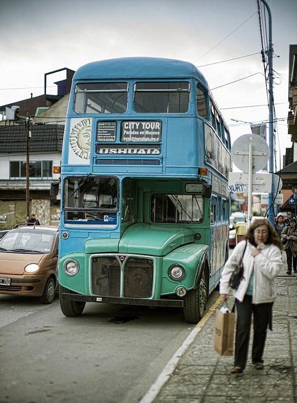

Ушуайя — самый южный город в Аргентине (а по некоторым данным — и на всей нашей планете), его зачастую называют «краем света». Ушуайя расположена на побережье пролива Бигл, всего в 900 км от Антарктиды, а окружает город красивейшая девственная природа с множеством величественных гор, нетронутых лесов и чистейших ледников. Несмотря на столь дальнее расположение, Ушуайя является знаменитым туристическим центром и очень престижным горнолыжным курортом, который славится отличным сервисом и развитой инфраструктурой.
В прошлом город Ушуайя был местечком китобоев, а позже выполнял функции каторжной колонии, где отбывали свои сроки русские анархисты. Именно эти каторжники и построили железную дорогу, которая сегодня является популярным маршрутом туристического железнодорожного состава под названием «Поезд к концу Земли». Причем направляется этот ретро-поезд в самые живописные и дикие места провинции. Однако главным предметом гордости всего города считается Национальный парк Огненной Земли, который стал самым посещаемым местом в регионе. Благодаря его девственной природе, озерам, ледникам, каменистым пляжам, а также животному и растительному миру сюда ежегодно приезжает неимоверное количество путешественников.
Другой знаковой достопримечательностью Ушуайи стал экзотический маяк Фаро лес Эклайрерс, который стоит у самого берега океана. Он является единственным маяком города и признан одной из самых южных построек на планете. Кроме этого советуем осмотреть главную улицу Сан-Мартен, Морской музей, Музея Края Света, который расположен в здании старой тюрьмы, и ранчо Харьертон.
В Ушуайе, как и во всей провинции Огненная Земля, местная кухня значительно отличается от аргентинской. Например, здесь особой популярностью пользуются такие морепродукты, как черный мерлан, треска, лещ и моллюски всевозможных видов. Также благодаря тому, что здесь на высоком уровне развито овцеводство, широкое распространение получили всевозможные блюда из патагонского ягненка. Кроме этого в местных ресторанах можно попробовать козлятину, свинину и оленину. Главным же угощением, которое стало визитной карточкой местных поваров, является «асадо» — мясо, приготовленное на вертеле. Также стоит обратить внимание на всевозможные паштеты, «касуэлу» (жаркое с овощами), «ньяко» (каша из кукурузы, пшеницы и ячменя), ароматный хлеб из семян араукарии и чесночный соус «чимичурри». Помимо этого некоторые рестораны города специализируются на довольно экзотическом меню, главным ингридиентом которого является мясо броненосцев, страусов и вискаш.
Интересны и местные десерты, которые также немного отличаются от традиционных аргентинских лакомств. Так, здесь чаще всего предлагают выпечку с разнообразными пряностями или грецкими орехами, «альфахоры» (пироги с карамелью и шоколадом) и «фланы» (пудинги). Кроме этого распространены всевозможные угощения из сезонных фруктов (особенно из айвы) и шоколада.
Ну а запивают все вышеперечисленные угощения бодрящим чаем-мате, который является национальным напитком страны. Что же касается алкоголя, то здесь пальму первенства держат великолепные аргентинские вина. Кроме этого довольно популярны местные сорта пива (Quilmes и Isenbeck) и «фернет» (крепкая настойка из трав).
Несмотря на то, что город Ушуайя лежит на самом юге страны, гостиничная инфраструктура тут находится на достаточно высоком уровне. В городе насчитывается множество отелей, от простых хостелов до роскошных дорогих отелей. Из самых лучших вариантов размещения стоит выделить такие отели, как Lennox Ushuaia (от 183 $), Hotel Albatros (от 127 $) и Las Hayas Resort Hotel (от 204 $). Также для гостей города предоставлено множество гостиниц средней ценовой категории (Hostería Via Rondine, Hotel Villa Brescia) и хостелов (Hostal de la Laguna, Hostel Yakush). Стоит учесть, что, как правило, приличные варианты размещения необходимо бронировать заранее, ну а место в дешевой гостинице или хостеле можно легко найти по прибытию.
В Ушуайе общественный транспорт представлен лишь автобусами, однако они отличаются великолепным обслуживанием и высоким комфортом. Билеты на проезд продаются в специальных киосках и у водителей, а стоят около 0,4 $. Почти на всех остановочных пунктах есть расписание автобусных маршрутов, однако на некоторых из них водители останавливаются только по взмаху руки. Помимо этого в городе можно передвигаться на такси, причем тарифы здесь довольно низкие: примерно 0,4 –0,7 $ за км.
Также в Ушуайе неплохо развит водный транспорт, поэтому здесь постоянно курсируют многочисленные экскурсионные корабли, катамараны, яхты и катера.
В Ушуайе туристическим сезоном является период с декабря по март. Именно в этот промежуток года в город съезжается огромное количество путешественников, а все отели, круизные корабли и туристические агентства предлагают очень заманчивые и интересные предложения. Однако, в связи с наплывом отдыхающих, о размещении в отеле нужно побеспокоиться заранее, иначе существует риск остаться без приемлемого жилья, что может значительно испортить впечатление от отдыха.